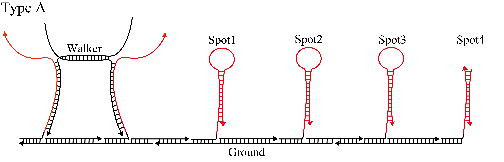

Simulate of DNAWalker
We performed simulations using Matlab[1] to confirm that the Walker process depends on the initial concentration of Fuel. We simulated the time-dependent concentration change of Output after setting the initial concentrations of Walker and Ground in 100 nM, and the concentration of Fuel to 50, 100, 150, and 200 nM. Additionally, we simulated the concentration change of Output when changing the initial concentration of Fuel from 0 to 500 nM with a fixed time of 10000 seconds. As shown in Figures 8 to 11, we found that the time-dependent concentration change of Output depends on the initial concentration of Fuel. As shown in Figure 12, the concentration of Output increased rapidly when the initial concentration of Fuel was given more than a specific value. Additionally, the concentration of Output increased rapidly above a threshold value as the levels of Spot increased (Type A, B, and C).

Figure 1: Simulation result(fuel 50nM)

Figure 2:Simulation result(fuel 100nM)

Figure 3:Simulation result(fuel 150nM)

Figure 4:Simulation result(fuel 200nM)

{kind=link}
Figure 5:Type A

Figure 6:Type B

Figure 7:Type C

Figure 8:Density change of outputs of type A,B,C
[1]Matlab: http://jp.mathworks.com/products/matlab/
© YOKABIO 2017